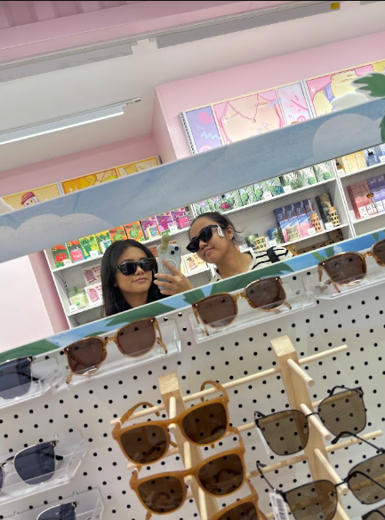
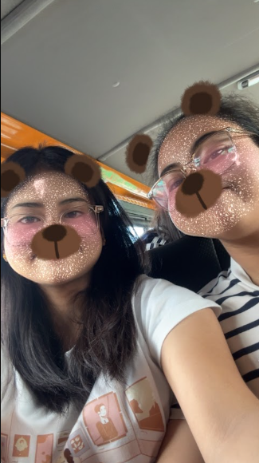
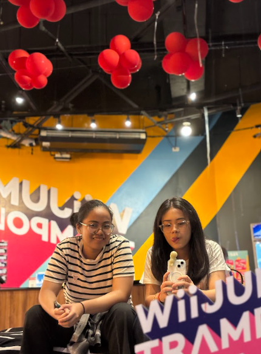
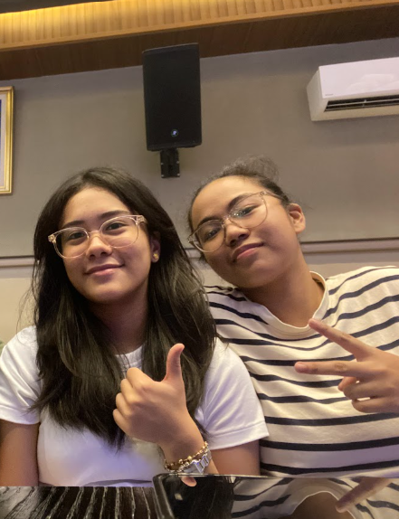
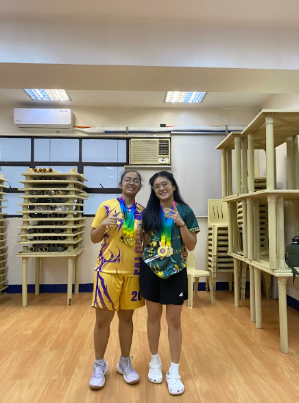

THEN CAME US
And somewhere along the way,
there was us. 🤍
Maybe that's what makes these moments so special. They weren't supposed to become memories at first.

one of my favorite little moments

just us being us

a moment worth keeping

somehow, ordinary became special

and I'd choose this memory again
There are things that don't look important when they're happening.
A random conversation. A laugh in the hallway. A few minutes together. A simple “how was your day?”
But somehow, those are the things that stay.
And looking at these photos now, I realize how much I treasure the little moments we got to have.
Not because they were perfect, but because they were ours.